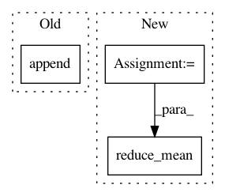

b7dbbfbf4111698145bb9e0bf2e34e36fef0430c,rllib/agents/sac/sac_tf_policy.py,,sac_actor_critic_loss,#Any#Any#Any#Any#,213
Before Change
y_true=q_t_selected_target, y_pred=q_t_selected)
]
if policy.config["twin_q"]:
critic_loss.append(0.5 * tf.keras.losses.MSE(
y_true=q_t_selected_target, y_pred=twin_q_t_selected))
// Alpha- and actor losses.
// Note: In the papers, alpha is used directly, here we take the log.
// Discrete case: Multiply the action probs as weights with the original
After Change
td_error = base_td_error
// Calculate one or two critic losses (2 in the twin_q case).
prio_weights = tf.cast(train_batch[PRIO_WEIGHTS], tf.float32)
critic_loss = [tf.reduce_mean(prio_weights * huber_loss(base_td_error))]
if policy.config["twin_q"]:
critic_loss.append(
tf.reduce_mean(prio_weights * huber_loss(twin_td_error)))
In pattern: SUPERPATTERN
Frequency: 3
Non-data size: 3
Instances
Project Name: ray-project/ray
Commit Name: b7dbbfbf4111698145bb9e0bf2e34e36fef0430c
Time: 2020-11-25
Author: sven@anyscale.io
File Name: rllib/agents/sac/sac_tf_policy.py
Class Name:
Method Name: sac_actor_critic_loss
Project Name: NifTK/NiftyNet
Commit Name: a0f77cc8b87512e691a7c22b6fb9ba60f603b632
Time: 2017-07-04
Author: r.gray@ucl.ac.uk
File Name: layer/reparameterization_trick.py
Class Name: ReparameterizationLayer
Method Name: layer_op
Project Name: NifTK/NiftyNet
Commit Name: f360de0fa4454122d665b9c32f4d5911a4ebec0c
Time: 2017-08-19
Author: wenqi.li@ucl.ac.uk
File Name: niftynet/layer/loss.py
Class Name: LossFunction
Method Name: layer_op